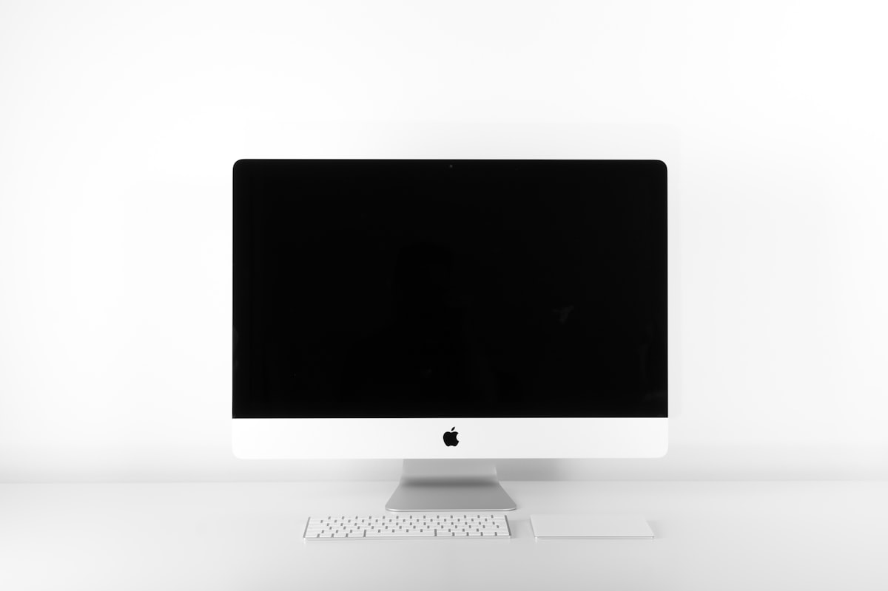

Dải giá phổ biến nhất của Acer cho sinh viên.
Acer chi tiết
Acer có những dòng nào, giá bao nhiêu, hợp ngành nào?
Acer mạnh ở mức giá dễ tiếp cận và cấu hình thực dụng. Bảng dưới đây giúp bạn chọn nhanh theo dòng, năm, giá và màu sắc.

Phổ biến: đen, bạc, xám, xanh đậm.
Nhiều model đời mới nâng cấp pin và hiệu năng.
Aspire 3 / Aspire 5
2022-2026, thực dụng, giá dễ tiếp cận
Aspire phù hợp sinh viên cần máy học tập ổn định, xử lý văn phòng và đa nhiệm nhẹ với chi phí tối ưu.
- Màu: Pure Silver, Steel Gray, Charcoal Black
- Ngành hợp: kinh tế, sư phạm, ngoại ngữ, xã hội
- Nên ưu tiên RAM 16GB nếu học lâu dài
Pure SilverSteel GrayCharcoal Black
Swift 3 / Swift Go
2023-2026, mỏng nhẹ và pin tốt
Swift là nhóm máy cân bằng tốt giữa trọng lượng nhẹ, pin và hiệu năng cho học tập nghiêm túc hằng ngày.
- Màu: Silver, Gray, Navy Blue, Rose Gold
- Ngành hợp: quản trị, truyền thông, marketing, CNTT cơ bản
- Phù hợp người cần máy nhẹ để đi học mỗi ngày
SilverGrayNavy BlueRose Gold
Nitro 5 / Nitro V
2023-2026, hiệu năng cho ngành kỹ thuật
Nitro phù hợp sinh viên cần CPU/GPU mạnh hơn để code nặng, dựng video, thiết kế và mô phỏng cơ bản.
- Màu: Obsidian Black, Dark Slate
- Ngành hợp: CNTT, kỹ thuật, kiến trúc, multimedia
- Nên chọn bản có GPU RTX nếu học đồ họa
Obsidian BlackDark Slate
Chọn nhanh
Acer hợp ai nhất?
Nếu ngân sách vừa phải, bắt đầu với Aspire. Nếu cần gọn nhẹ, ưu tiên Swift. Nếu cần hiệu năng cho chuyên ngành nặng, chọn Nitro.
- Aspire: tối ưu chi phí
- Swift: di chuyển nhiều và pin tốt
- Nitro: hiệu năng cho ngành kỹ thuật